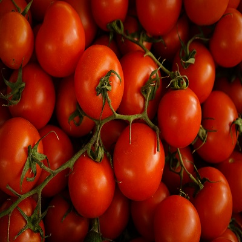

Winter Season - Rice
Winter rice, often known as Boro rice in South Asia, is grown during the dry season (Nov–April), relying heavily on irrigation rather than rain.
More
Summer season - Potato
primarily second-early or late-crop varieties planted in spring to early summer for harvest from mid-to-late summer, or in late summer for fall harvest.
More
Winter Season - Tomato
Winter tomato cultivation thrives in cooler temperatures, generally requiring 4-6 ploughings, organic manure, and proper drainage.
More